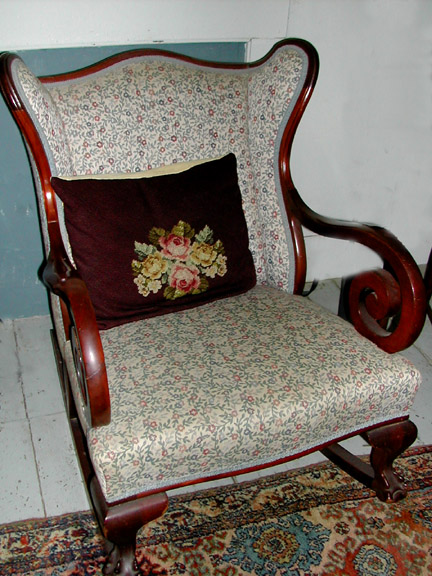
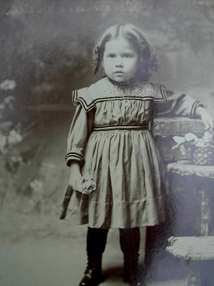
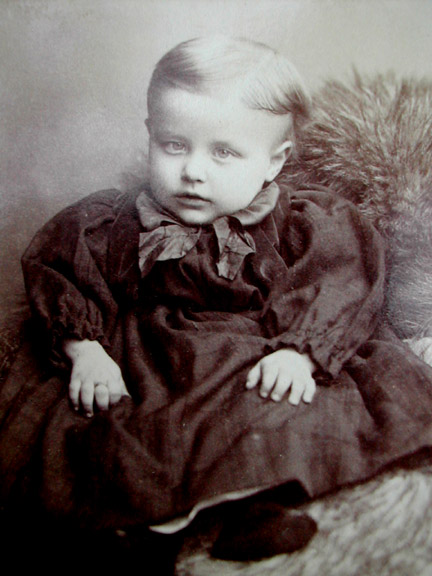
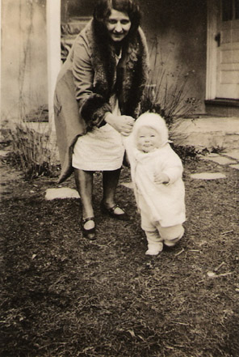
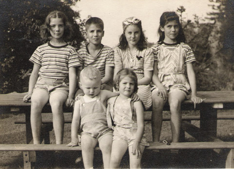
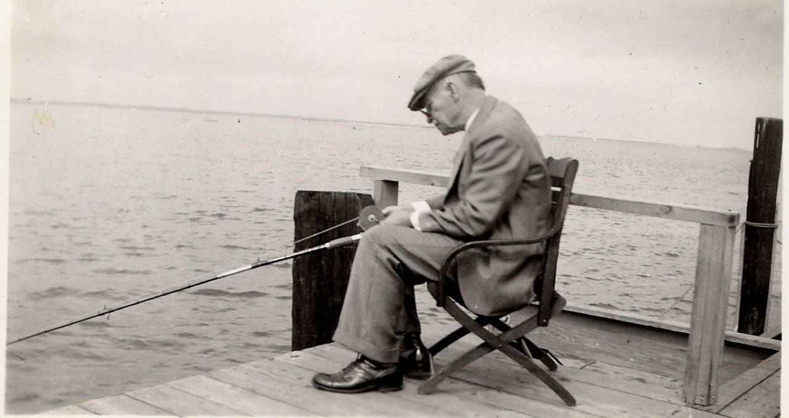
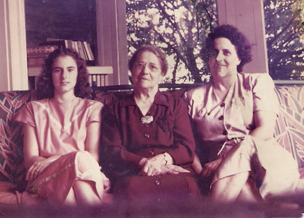
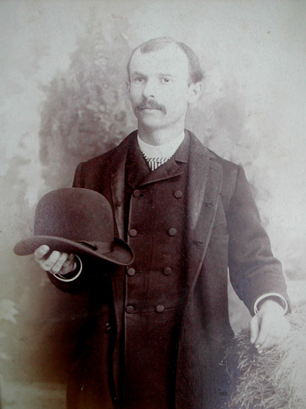

AT HOME |
Meanwhile Emma, as a new bride, found that her first duty was in caring for her husband's mother in her last illness. This Emma did with patience and love in their home on Mervine Street. Afterwards, when she and Andrew had their first child, she needed those same traits since the baby Andrew was severely retarded and was unable to walk or care for himself. Emma took loving care of him until his death at age 28. In the meantime, she gave birth to Lillian, Russell, Katherine and Ruth. In 1906 the family moved to a lovely big house on Jeanes Street in Fox Chase, built especially for them. It had 11 rooms, a small greenhouse, outbuildings and wonderful lawns and gardens. Andrew's after-work hobby was gardening and his vegetables were legendary among those to whom he gave baskets full. The ladies of the house put up jars and jars of vegetables for the winter. Andrew invested his money wisely and was know for his generosity and compassion to those less fortunate. He had some real estate holdings, but would often waive the rent for tenants who had fallen on hard times. A sad event was the death of Katherine from meningitis at age 4. People said that she had been a sweet, saintly child..."too good to live". Lillian was her parents' mainstay, helping with the house and garden until her death at age 45 from cancer. She was known for her beautiful flowers. Ruth, the youngest, helped too, but her very special musical talent was encouraged by her family. She became a fine pianist and organist, and taught music until her marriage to George Edwin Fredericks. She loved nature, poetry and beauty, and passed along this fine appreciation to her daughter Ruth. Russell was expected to follow his father into the family business, but realised that his true calling was to become a doctor. His father gave him all his backing to fulfill this desire and what a blessing it turned out to be for the whole family! He took care of all of us and would treat patients for no, or little, charge if they were in difficulty. He married Margaret Funk Weimar who bore him four children, Margaret Emma, Russell McGaw, Kathryn Funk and Lillian Phyllis. We five grandchildren spent some of the happiest times of our childhood running about together on our grandparents' place, climbing the forbidden magnolia, sitting on the roof of the chicken shed from which we could reach the huge cherries of the oxheart tree, or, on rainy days, rooting in the musty attic trunks. Andrew lived until he was 80. He had experienced a heart attack and was told to stay in bed, but, true to his nature, he thought he'd go downstairs to shut the greenhouse window. He died a short time later. Emma lived on for a while in the big house . Realising it was too much for her, she came to live with daughter Ruth and grandaughter Ruthie. Her dear doctor-son Russell continued to care for her through her last illness. She died just short of 80 years old. |







